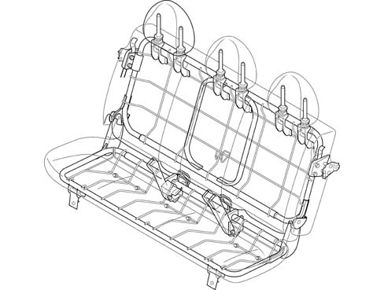
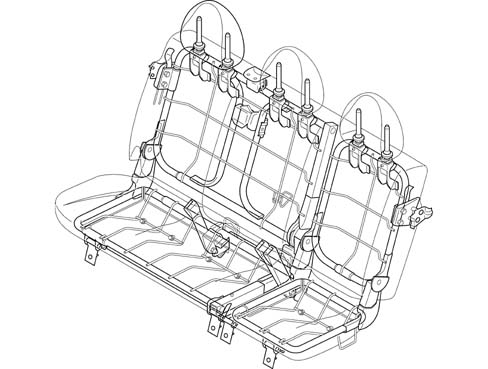

Introduction - REAR SEATS
- Path
- Descriptions > 70 FITTINGS > 7050 REAR SEATS > Introduction - REAR SEATS
- Kind
- system description
- Applies to
- all engines; all production periods
- Interactive page
- https://sloeber94.github.io/elrnDB-fDbl/en/#/2585429
Applies to: all engines; all production periods; only with equipment: Doblò trim level
In case of rear impact, the tubular seat structure protects passengers from contact with items in the luggage compartment and ensures the body does not submarine underneath the seat belt.
The seat may be one-piece or split
One-piece rear seat

Applies to: all engines; all production periods; only with equipment: Doblò trim level
Split rear seat
